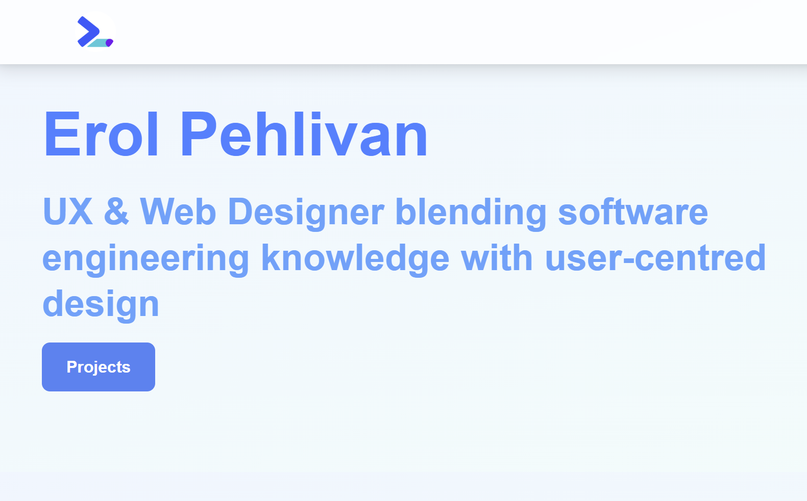

Portfolio Website
Project Summary
This project is a personal portfolio website designed and developed using Tailwind CSS, focusing on clarity, responsiveness, and a clean visual hierarchy to effectively showcase my work.

This project is a personal portfolio website designed and developed using Tailwind CSS, focusing on clarity, responsiveness, and a clean visual hierarchy to effectively showcase my work.

This project was created to demonstrate my ability to design and develop a personal portfolio website from scratch. I used Tailwind CSS to build a fully responsive layout with a strong focus on usability, consistency, and visual clarity.
The website itself serves as a live example of the project, showcasing my approach to layout, navigation, and user experience. Visitors are encouraged to explore the site and view the individual case studies.